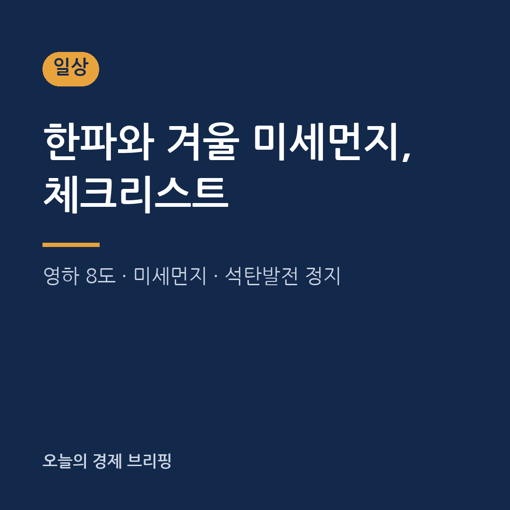

2026-11-24-1746-tistory 발행 키트 · 이 페이지는 검색에 노출되지 않습니다.
제목
카테고리
일상태그
본문 (그림·표 포함)
휴대폰 블로그 앱에서는 그림이 같이 붙지 않을 수 있어요. 그때는 [글자만 복사] 후 아래 이미지를 저장해 [그래프1]·[표1] 자리에 첨부하세요.

핵심부터 정리하면 두 가지입니다. 25일(수) 아침에는 기온이 영하 8도까지 내려간다는 예보가 나왔고, 올겨울 미세먼지는 지난겨울보다 짙어질 가능성이 크다는 전망이 함께 나왔습니다.
이 글에서는 두 소식의 배경과 내용을 짚고, 일상에서 확인할 점을 순서대로 정리합니다.
▶ 배경: 추위와 대기 정체
기상 예보 기사에 따르면 25일 아침 최저기온은 영하 8도로 제시됐고 바람도 거센 편입니다. 같은 기온이라도 바람이 불면 체감온도는 더 낮아집니다.
미세먼지 전망은 별도 기사에서 확인됩니다. 엘니뇨(적도 부근 바다 수온이 높아지는 현상)의 영향으로 대기가 정체되는 날이 생길 수 있다는 점이 배경으로 설명됐습니다. 공기가 흐르지 않으면 오염물질이 빠져나가지 못하고 쌓입니다.
▶ 핵심 내용: 정부의 석탄발전 감축
미세먼지 전망과 함께 석탄발전을 최대 18기까지 정지한다는 내용이 보도됐습니다. 배출원을 줄이는 방식입니다.
다만 구체적인 시행 기간과 대상 설비는 이번에 확인한 기사 범위 밖이므로, 정확한 일정이 필요하면 관련 기관 공지를 따로 확인하셔야 합니다.
▶ 영향: 가정에서 달라지는 점
한파는 수도 배관과 난방 설비에 영향을 줍니다. 외기와 맞닿은 수도가 얼면 아침에 물이 나오지 않을 수 있습니다.
미세먼지는 호흡기가 약한 어르신, 어린이, 만성 호흡기 질환이 있는 분에게 부담이 큽니다. 외출 시간과 환기 방식을 조정하는 것이 기본 대응입니다.
▶ 확인할 점: 점검 표
겨울철 대비 항목 정리
| 구분 | 내용 | 확인 방법 |
|---|---|---|
| 한파 | 25일 아침 최저 영하 8도 예보, 강풍 | 거주 지역 최신 예보 확인 |
| 미세먼지 | 지난겨울보다 짙을 가능성, 석탄발전 최대 18기 정지 | 외출 전 대기질 예보 확인 |
| 가정 설비 | 수도 배관·보일러 점검 | 25일 아침 전 점검 |
| 취약 가족 | 어르신·어린이 호흡기와 보온 | 외출 시간·환기 조정 |
출처: 연합뉴스
위 표의 항목 중 우선순위는 수도·보일러 점검입니다. 25일 아침 전에 끝내 두면 당일 불편을 줄일 수 있습니다.
기온 예보는 지역에 따라 다를 수 있으므로, 거주 지역의 최신 예보를 출근 전에 다시 보시기 바랍니다.
대기질 예보는 시간대별로 달라질 수 있어, 외출 직전에 한 번 더 확인하는 습관을 들이면 도움이 됩니다. 마스크는 가방이나 현관에 미리 두는 편이 좋습니다.
▶ 정리
1. 25일 아침 최저기온 영하 8도 예보, 바람이 강해 체감온도는 더 낮을 수 있습니다.
2. 올겨울 미세먼지는 지난겨울보다 짙을 가능성이 있고, 석탄발전은 최대 18기가 정지된다고 보도됐습니다.
3. 수도·보일러 점검, 외출 전 대기질 확인, 취약 가족 보호가 가장 현실적인 대비입니다.
출처 (본문 맨 아래에 붙여넣기 권장)
- 연합뉴스, 수요일 더 춥다…아침 최저 영하 8도에 바람도 거세, https://www.yna.co.kr/view/AKR20261124159800530 - 연합뉴스, 올겨울 미세먼지 작년보다 짙을 듯…석탄발전 최대 18기 정지, https://www.yna.co.kr/view/AKR20261124148800530